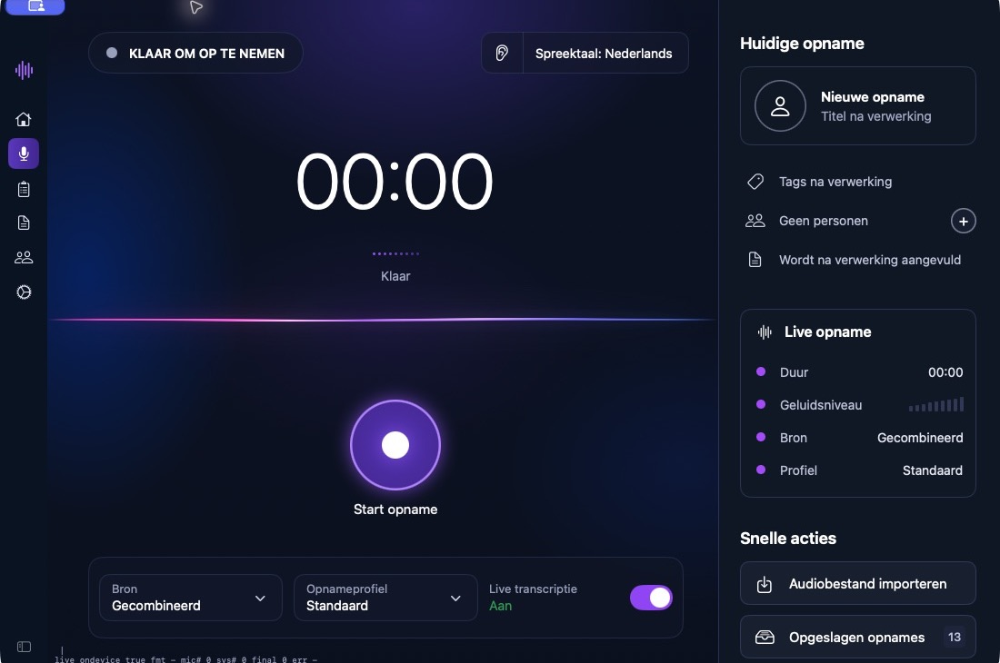
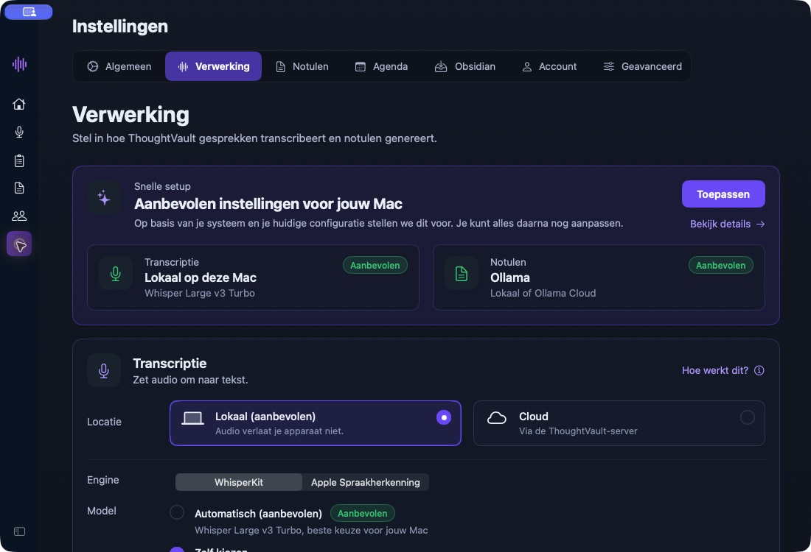

JE NOTITIE
Een idee om te starten.
Begin volgende maand met een kleine pilot. Werk eerst de planning en de eerste concepten uit.
VOLGENDE STAPDe pilot concreet maken.
Idee vastleggenSpreek een idee in of neem een gesprek op.
Een heldere notitie in je Obsidian-vault.
Via je organisatie of een Prezent/Yinga-abonnement. Vraag naar toegang en tarieven.
Bekijk dezelfde woorden als idee, vergaderverslag of salesnotitie. Kies een profiel en zie wat je krijgt.
De pilot start volgende maand. Het team bereidt de planning en eerste concepten voor.
Een vault is je verzameling notities in Obsidian. Stel de koppeling in om nieuwe notities automatisch als Markdown te bewaren. Je kunt ook los exporteren naar PDF, Word of HTML.
Leg een idee of gesprek vast. ThoughtVault bewaart de woorden voor je.

Kies lokale transcriptie en een passende AI-provider. Of laat je gesprekken via de cloud uitwerken.
Met lokale transcriptie én lokale AI blijft de verwerking op je eigen computer.
Mogelijkheden verschillen per platform en gekozen provider.

Stel de Obsidian-koppeling in ThoughtVault in en schakel automatisch exporteren in. Nieuwe notities en notulen worden dan als Markdown in je vault opgeslagen. Je kunt ze daar verder bewerken en de bijgewerkte versie weer in ThoughtVault ophalen.
Ja. Met gecombineerde opname leg je je microfoon en het systeemgeluid vast. Zo neem je ook de stemmen uit je videocall op. Op macOS zijn daarvoor microfoon- en schermopnamerechten nodig.
Je kunt offline opnemen. De audio wordt lokaal bewaard en wachtende uploads worden hervat zodra je verbinding terug is. Volledig lokaal verwerken vraagt lokale transcriptie en een geschikte lokale AI-provider.
Ja. Profielen bepalen de structuur, taal en toon van je notulen. Gebruik een bestaand profiel of maak er zelf een. Je kunt een notule ook opnieuw laten genereren met een ander profiel.
Dat hangt af van je gekozen verwerking. Bij cloudverwerking worden audio en transcript naar de server gestuurd. Bij lokale verwerking kies je lokale transcriptie en lokale AI. In je account vind je opties voor gegevensexport en accountverwijdering.
Je krijgt een gestructureerde uitwerking die je kunt bewerken en exporteren. Controleer vóór het delen altijd namen, besluiten en actiepunten: de kwaliteit hangt ook af van het geluid en de gekozen AI.
Toegang kan via je organisatie of een Prezent/Yinga-abonnement lopen. Vraag Yinga per e-mail naar toegang en tarieven voor jouw situatie. Heb je al een account? Vraag de persoonlijke downloadlink voor jouw platform aan. De knoppen hieronder openen je e-mailapp; verstuur de aanvraag daar zelf.
Toegang kan via je organisatie of een Prezent/Yinga-abonnement lopen. Nog geen account? Vraag naar de mogelijkheden, een demo en de tarieven voor jouw situatie.
Vraag toegang en tarieven per e-mailDeze knoppen openen je e-mailapp. Je verstuurt de aanvraag daar zelf. Geen e-mailapp ingesteld? Mail naar sales@yinga.nl en vermeld je platform en of je al een account hebt.
| Mogelijkheid | macOS | Windows |
|---|---|---|
| Notulen met eigen profielen | Ja | Ja |
| Obsidian exporteren en terughalen | Ja | Ja |
| Lokale transcriptie | Op je Mac | Whisper op je pc |
| Lokale AI voor notulen | Ollama of LM Studio | Ollama of LM Studio |
| Apple Intelligence | macOS 26+, op een geschikte Mac | Niet beschikbaar |
Voor volledig lokale verwerking stel je zowel lokale transcriptie als lokale AI in. Download de benodigde modellen vooraf. De appbeelden op deze pagina tonen macOS.